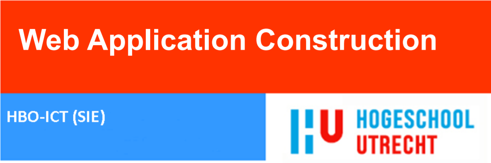

Les 2, practicum 5, rekenmachine
les 3 practicum 2, URI 1, Een lijst (array) van alle landen waar informatie van is
les 3 practicum 2, URI 2, Landinformatie (op basis van landcode)
les 3 practicum 2, URI 3, Een lijst (array) met de 10 grootste landen, gemeten naar oppervlakte
les 3 practicum 2, URI 4, Een array met de 10 grootste landen, gemeten naar inwoneraantal
Les 4, practicum 3, rekenmachine
Les 5, practicum: openweathermap, ip-api & worldresources
Les 6, practicum 2,3 en 4 (localStorage en CSS)
les 7 practicum 3, URI 1, Een lijst (array) van alle landen waar informatie van is
les 7 practicum 3, URI 2, Landinformatie (op basis van landcode)
les 7 practicum 3, URI 3, Een lijst (array) met de 10 grootste landen, gemeten naar oppervlakte
les 7 practicum 3, URI 4, Een array met de 10 grootste landen, gemeten naar inwoneraantal
Les 8, practicum 1, RESTFUL WEBSERVICES & RELATIONAL DATABASES
Les 9, practicum 2, PRACTICUM: AUTHENTICATION, AUTHORIZATION & HTTPS